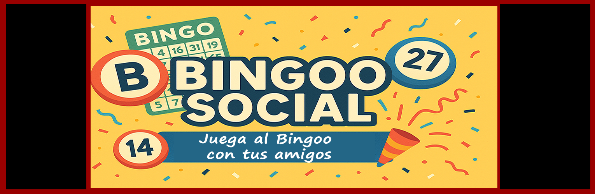

El bingo más divertido y accesible para asociaciones y centros sociales
Versión para Windows – Gratis y sin instalación complicada
Bingoo Social es un software gratuito diseñado para asociaciones, centros de mayores, actividades comunitarias y cualquier grupo que quiera disfrutar de un bingo divertido, accesible y totalmente legal para uso social.
Si Bingoo Social te resulta útil, puedes apoyar su desarrollo: